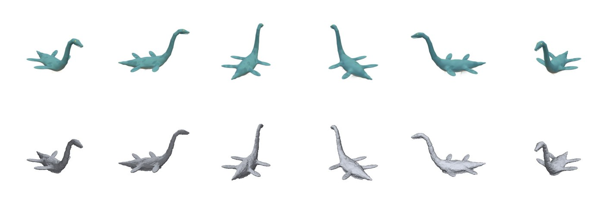
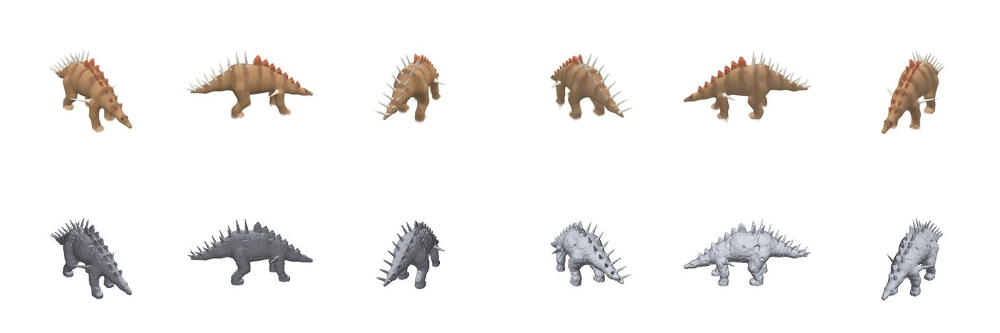
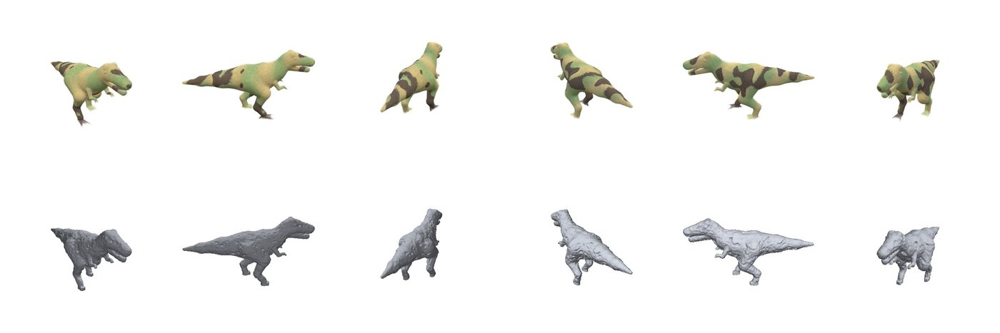

Each opens in 3-D: an object to turn round, beside the solid made from it; a place to look round from where it was photographed. “Pictures kept back”: a tenth of the pictures are not used for training, and the number says how closely the splat reproduces them (higher is closer).

A room, from one seat
seen by a headset
Looked at from one seat with a Meta Quest 3S on 17 November 2026: 26 pictures. Nothing was walked round, so this is a view to look round from where it was photographed; away from that spot it has gaps. The 3-D model of the room is an estimate: the headset measured only the wall with the map, and the rest of the shape comes from a depth-estimating network pinned to one measured point per picture. Published by the person whose room it is; the camera pictures stay with them.
- Pictures
- 26
- Splat
- 525,956 Gaussians, 7,000 steps; 400,000 shown here
- Pictures kept back
- reproduced at 33.35 dB
- Room model
- 4.64 × 4.7 m, 2.95 m high (an estimate)
- Diorama print
- 1:30, 155 × 156 × 76 mm; 14h 34m 56s, 222.39 g PLA
Look round it in 3-Dthe splat (.spz) 6.7 MB · the room model (.glb) 16 MB · diorama STL, 1:30 (zip) 18 MB

Nessie, a Plesiosaurus (a test of the method)
a test of the method
Not a headset scan. A Plesiosaurus (a sea reptile of the dinosaurs' time, not a dinosaur; the Loch Ness monster is usually drawn as one) was sculpted on the computer and drawn from 111 viewpoints all round it, 61 cm away, with the Quest 3S camera's geometry and with noise added to the depth, and those pictures went through the same steps as a real scan. Because the true shape is known, the solid can be measured against it: half of its surface lies within 0.45 mm of the true one.
- Real size
- 18.1 × 15.3 × 12.6 cm high
- Pictures
- 111
- Splat
- 473,962 Gaussians, 8,000 steps; 3,797 are the object
- Pictures kept back
- reproduced at 37.87 dB
- From the true shape
- 0.45 mm for half the surface, 1.79 mm for 95 %
- Print
- 120 × 102 × 84 mm; 1h 24m 8s, 24.90 g PLA
Turn it round in 3-Dthe splat (.spz) 63 kB · STL to print (120 mm) 4.2 MB · sliced for a Bambu H2C (.3mf) 4.8 MB

Kentrosaurus (a test of the method)
a test of the method
Not a headset scan. A Kentrosaurus, Stegosaurus's smaller and spikier cousin, was sculpted on the computer and drawn from 111 viewpoints all round it, 62 cm away, with the Quest 3S camera's geometry and with noise added to the depth, and those pictures went through the same steps as a real scan. Because the true shape is known, the solid can be measured against it: half of its surface lies within 0.46 mm of the true one, and its overall size comes out 2 % small.
- Real size
- 18.5 × 13.6 × 10.5 cm high
- Pictures
- 111
- Splat
- 430,854 Gaussians, 8,000 steps; 5,876 are the object
- Pictures kept back
- reproduced at 37.91 dB
- From the true shape
- 0.46 mm for half the surface, 1.87 mm for 95 %
- Print
- 120 × 88 × 68 mm; 1h 39m 6s, 33.13 g PLA
Turn it round in 3-Dthe splat (.spz) 100 kB · STL to print (120 mm) 5.8 MB · sliced for a Bambu H2C (.3mf) 6.9 MB

T. rex (a test of the method)
a test of the method
Not a headset scan. A T. rex model made for the Dino Print game was drawn on the computer from 111 viewpoints all round it, 61 cm away, with the Quest 3S camera's geometry and with noise added to the depth, and those pictures went through the same steps as a real scan. Because the true shape is known, the solid can be measured against it: half of its surface lies within 0.47 mm of the true one.
- Real size
- 18.2 × 13.0 × 11.3 cm high
- Pictures
- 111
- Splat
- 439,587 Gaussians, 8,000 steps; 5,491 are the object
- Pictures kept back
- reproduced at 37.71 dB
- From the true shape
- 0.47 mm for half the surface, 1.57 mm for 95 %
- Print
- 120 × 86 × 75 mm; 1h 33m 49s, 30.44 g PLA
Turn it round in 3-Dthe splat (.spz) 97 kB · STL to print (120 mm) 4.7 MB · sliced for a Bambu H2C (.3mf) 6.2 MB

Triceratops (a test of the method)
a test of the method
Not a headset scan. A Triceratops model made for the Dino Print game was drawn on the computer from 111 viewpoints all round it, 39 cm away, with the Quest 3S camera's geometry and with noise added to the depth, and those pictures went through the same steps as a real scan. Because the true shape is known, the solid can be measured against it: half of its surface lies within 0.37 mm of the true one.
- Real size
- 6.1 × 13.2 × 7.1 cm high
- Pictures
- 111
- Splat
- 293,371 Gaussians, 6,000 steps; 5,606 are the object
- Pictures kept back
- reproduced at 39.64 dB
- From the true shape
- 0.37 mm for half the surface, 1.68 mm for 95 %
- Print
- 56 × 120 × 65 mm
Turn it round in 3-Dthe splat (.spz) 92 kB · STL to print (120 mm) 4.7 MB